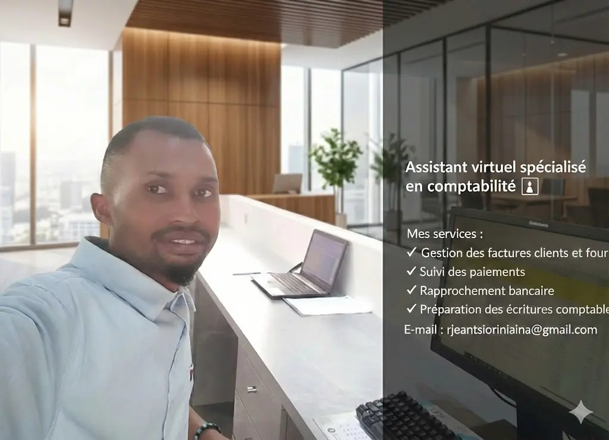

💼 Services comptables professionnels à distance
- Tenue de livre comptable pour entreprises et PME
- Rapprochement bancaire précis et fiable
- Pré-comptabilité et organisation financière
- Écritures comptables professionnelles
- Comptabilisation des opérations
- Suivi clients et facturation
- Suivi fournisseurs
- Paiements et gestion des salaires
📊 Pourquoi travailler avec moi ?
Je vous aide à optimiser votre gestion financière et à gagner du temps grâce à une comptabilité fiable, organisée et professionnelle.
Mon objectif est de vous permettre de vous concentrer sur le développement de votre entreprise.
⭐ Qualité de service
Service sérieux, rapide et adapté aux besoins des entrepreneurs, freelances et PME.
🚀 Prêt à collaborer ?
Contactez-moi pour un service comptable professionnel et fiable.
Demander un devis